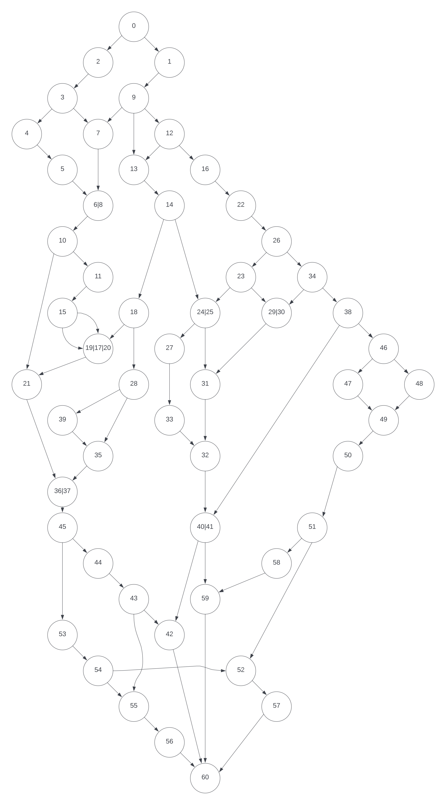
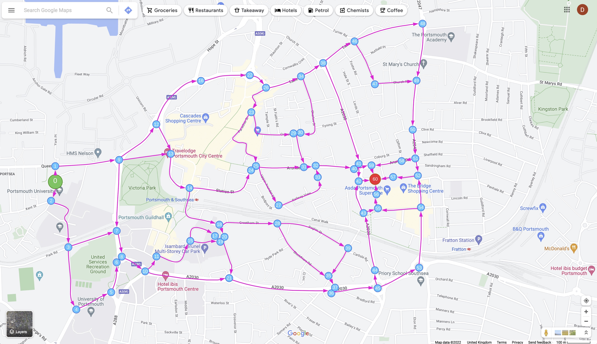

Mapping video clip segments (Interactive Map)
Below is a Google My Maps custom map which correlates each of the 9 video segments to the real world map
Algorithm decision nodes
Directed graph demonstrating sample decision tree

Sample decision tree applied to map of sample area
